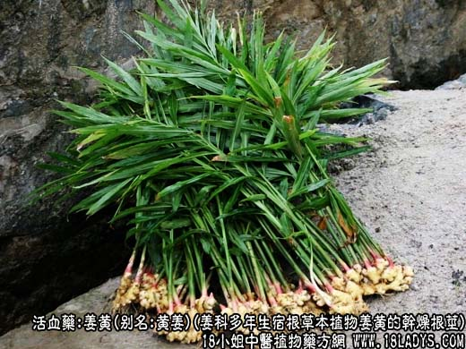
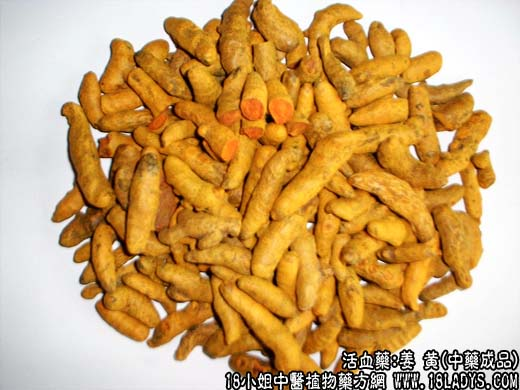
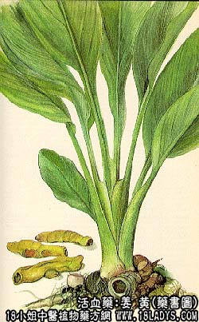

姜黄为较常用中药。始载《唐本草》，因其茎叶及根茎似姜而色黄故名。目前商品有姜黄和片姜黄两种。
别名：黄姜。
来源：姜黄：为姜科多年生宿根草本植物姜黄的干燥根茎。多为栽培。
片姜黄:为姜科多年生宿根草植物温郁金的根茎趁鲜时切片晒干。多为栽培。
产地：姜黄：主产于四川、福建以及江西、湖北、陕西、去南、台湾地。
片姜黄：主产于浙江温州地区。
性状鉴别：姜黄：主根茎呈卵圆形或长圆形，长3~4厘米，直径2~3厘米。外表皮鲜黄色，多皱缩，有明显的环节（叶基痕），状如蝉，俗称“蝉肚姜黄”。侧生根呈圆柱形或稍扁，略弯曲，常有支指状分歧，两端钝尖，长2.5~5.5厘米，直径1厘米左右，俗称“长条姜黄”。外表面棕黄色或灰黄色，皱缩或只显细皱纹，亦显较细环节纹。质坚实。横断面橙色、棕黄色或黄褐色，角质样，有一淡黄色环圈（形成层），维管束极细不甚显著。姜气香，味辛微苦。
以条块肥壮，外色鲜黄，内色橙黄，香辣味浓者为佳。
片姜黄：为不规则的纵切片，长3~8厘米，宽1.5~3.5厘米，厚约2~3毫米。边缘皮层粗糙皱缩略向内容卷，土黄色或灰黄色，切面与表色略同，略平滑，有时可见维管束点线。质坚而脆，易折断。断面黄白色，不平坦，无光泽。姜气香，味辛凉苦。
切片整齐，薄厚均匀，淡黄白色，质坚实，香、辣、苦、凉、味重者为佳。
主要成分：含挥发油，主要为姜黄酮、芳香姜黄酮、姜烯等。
药理作用：行气滞、散风活血而镇痛。且有利胆作用（促进胆汁排出，作用较弱但持久）和收缩子宫作用（兴奋子宫，能维持5~7小时的阵发性收缩）。
炮制：姜黄切片，生用。片姜黄原品入药。
性味：辛、苦、温。
归经：入肝、脾经。
功能：行气破瘀，通经。
主治：经闭腹痛。徽瘕积聚，肩臂痹痛，外伤瘀血肿痛等症。
临床应用：主要用于治疗风湿痹痛，在行血镇痛上有其特长，常与黄芪、桂枝、白芍等配伍，方如黄芪桂枝五物汤加味。治肩关节周围炎用此方，也有一定效果。
用于治疗月经痛，由子宫虚寒、血滞不通引起者，常配当归、川芎、延胡索等。
用量：3~9g
处方举例：黄芪桂枝五物汤加味：黄芪15g，桂枝6g，秦艽6g，片姜黄4.5g，当归6g，白芍6g，生姜6g，大枣4枚，水煎服。
注：1、药用以片姜黄为主，姜黄多作食品染料。
2、以上两种植物的块根均为郁金（详见郁金项下）。
3、姜黄、郁金及莪术三者的胡植物及彼此的关系，历来比较混乱，近代按植物分类，已知三者均属姜科姜黄属植物的根茎及块根。现市场售商品，是根据不同产地、不同部位、形色以及加工方法不同分别命名的。